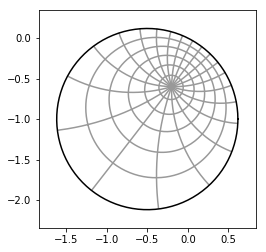

Mathematics 552
Applied Complex Variables
12:00pm-12:50pm MWF, LeConte 405
- Instructor:
- Ralph Howard
- Office: LC 304
- Phone: 777-7471
- E-mail: howard@math.sc.edu
- Office Hours: TTh 2:30pm-3:30pm and
by appointment.
- Syllabus. It contains the basic information about prerequisites, grading, test dates, the text and so forth.
- Text:
Schaum's Outline of Complex Variables, 2ed by
by Murray Spiegel, Seymour Lipschutz, and Dennis Spellman.
-
- Previous Math 552 Classes I have taught:
Spring 2012
Spring 2006
Spring 2000
Spring 1999
Fall 1994
-
-
- Tests:
Review for Test 1.
Solutions to Test 1.
-
- Quizzes:
Quiz 2
-
- Homework:
Homework 1
Homework 2
Homework 3
Homework 4
Homework 5
Homework 6
Homework 7
Homework 8
Homework 9
Homework 10
Homework 11
Homework 12
Homework 13
Homework 14
Homework 15
-
-
Home